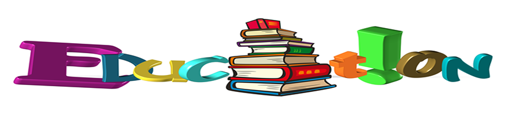

I want to Crack Gate 2018
The Graduate Aptitude Test in Engineering (GATE) is an all-India examination that basically tests the complete students of different students of subjects in designing and science. Almost 9 lakhs of students appear for the Gate exam out of which 2000 seats are there in all the IITs and NIT.
Gate 2017 Preparation Plan Toppers
You must plan your GATE preparation in such a way that the most important topics are covered in the earlier phase. Prepare the topics as per their weight age from GATE perspective.
You must plan your GATE preparation in such a way that the most important topics are covered in the earlier phase. Prepare the topics as per their weight age from GATE perspective.
Gate 2019 Preparation Strategy
Have a clear understanding about GATE, the syllabus, the exam pattern. Gather as much information as possible about GATE. Concentrate on the syllabus. Understand the subjects involved and then choose the study
Gate Video Lectures Cse
Ravindra Babu's Lecture they are really high quality.
Specially TOC lectures.
Course Videos Description
Best Online Courses
These are some of the top courses:-
1.Coursera: www.coursera.org
2.Udacity - intro to CS course,
3.Coursera - Computer Science 101
Revision Test series and Mock Test
Test Series: A well structured and good quality Test Series is a must for continuously evaluating your performance and learning new concepts.
Programming Interviews Preparation
Facebook: PHP, C++, Python, Java, Perl. High regard for dynamic/scripting languages. (source)
Google: officially C/C++, Java, Python, Javascript, Go (source)
Amazon: Java, Javascript, Ruby, Python, Perl (source)
Microsoft: C++, C#, Java, Python
Scala, Haskell or Lisp.
Gate 2017 Time Management
After starting of 5th semester of your graduation course it’s the best time to start preparation of your GATE examination. This is the perfect timing for you to start your preparation by shrinking your daily schedule to give time for preparation for the said exam.
Gate Exam Coaching Needed
Coaching will definitely help you save lot of time and avoid lots of mistakes. You might hear some people saying that you can crack GATE with out coaching but it is estimated that nearly 20000 students are taking GATE CS after taking coaching from
Gate 2016 Day Befor Exam Preparation Tips
Do not get Stuck on any Question for Too Long : GATE exam carries 65 questions and time duration is 3 hours. However, technical questions consume most of the time while attempting.
How To Crack Gate in 2 Months
Digest this fact that You do not have time to read standard textbooks now. If you have read some, good enough. If you have not, then don't. If you have some coaching material (hand written notes), revise it thoroughly (understand every word of it).
Gate Exam Tips And Hacks
Buy some small size note books or A4 size (50 pages or so) and keep one for each topic. If you are bored then you aren't learning and you need to change something Read two different subjects in parallel so that you wont feel bored .
Gate 2017 Exam Mistakes
Don’t read too many books; always read standard books. Some standard publications. Never try to read a complete book. Its not a sensible practice. Try to stick to the syllabus of GATE.
Gate Cse Syllabus
Discrete Mathematics: Propositional and first order logic. Sets, relations, functions, partial orders and lattices. Groups. Graphs: connectivity, matching, coloring.
Gate Cse Toppers Blog
For getting your hopes high and motivation you can read some of the best of gate toppers that can be found on the internet.
Gate Cse Marks Distribution
In all the papers, there will be a total of 65 questions carrying 100 marks, out of which 10 questions carrying a total of 15 marks are in General Aptitude (GA).
Gate Cse Cutt Off
Discipline wise GATE 2017 Cutoff IIT BOMBAY (Score out of 1000) Computer Science and Engineering CS 750 675 500 IIT DELHI (Score out of 1000)
Gate Notes And Study Materials
Made Easy notes availbale online. Download them. They are really very good and easy to understand. Download all the subjects. And if you don’t understand any topic then refer the standard books.
Gate Cse Answer Keys
{kind=link}
GO to official website http://www.gate.iitr.ernet.in/?page_id=485 for CS-2017 Q/a and http://www.gate.iitr.ernet.in/?page_id=258 for CS-2016 Q/a.
Best Mtech Colleges In India
Here is the suggested order of preference for various specializations and Institutes for M.Tech Computer Science(CS) and Information Technology (IT) :
After Or Along With Gate Exam
How to prepare for BARC, ISRO? Programming& Data Structure. Focus more on important topics like pointers, recursion, trees and Stacks. Follow standard books which have all the contents for clear understanding of C Programming concepts.
All About Gate Exam
The Graduate Aptitude Test in Engineering (GATE) is an examination that primarily tests the comprehensive understanding of various undergraduate subjects in engineering and science. GATE is conducted jointly by the Indian Institute of Science and seven Indian Institutes of Technology (Bombay, Delhi, Guwahati,
-
-
QUICK LINKS
- Best Books CSE
- Best Online Courses
- Best Video Lectures
- Crack Gate CSE 2018
- Gate 2017 Preparation Plan
- Revision and Test Series
- Crack Gate in 2 Months
- Day before Gate Exam
- Gate 2017 Exam Mistakes
- Gate Exam Tips and Hacks
- Interview Tips Cse
- Gate 2019 Preparation Strategy
- Gate 2017 Time Management
- Gate coaching needed?
- Best Mtech Colleges
- Toppers Blog
- After Gate Exam
© copyrights gateexamination.com